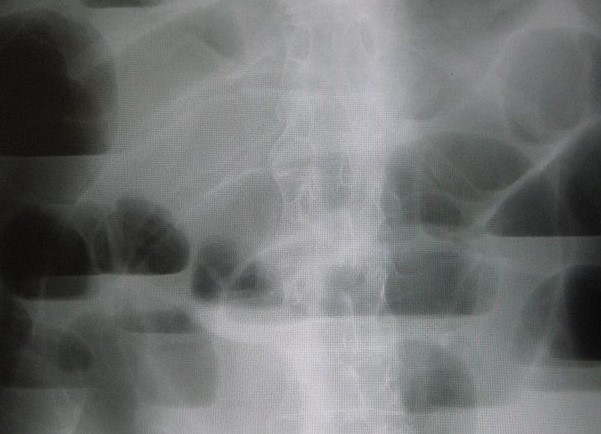

Ficha del catálogo
Obstrucción intestinal
- Sistema
- Digestivo
- Modalidad
- RX
- Región
- Abdomen
- Dificultad
- Intermedio
Detención del tránsito intestinal por una causa mecánica, generalmente bridas posquirúrgicas, hernias o tumores. La radiografía simple de abdomen sigue siendo el estudio inicial por su rapidez y disponibilidad.
Técnica
Radiografía de abdomen en decúbito supino y en bipedestación (o en decúbito lateral izquierdo si el paciente no puede incorporarse), ya que los niveles hidroaéreos solo se demuestran con el haz horizontal.
Qué observar
- Asas intestinales dilatadas: Por encima de 3 cm en intestino delgado y de 6 cm en colon
- Niveles hidroaéreos múltiples y escalonados en la proyección en bipedestación
- Distinción entre delgado y colon: El delgado muestra válvulas conniventes que cruzan toda la luz, mientras el colon tiene haustras que no la atraviesan por completo
- Ausencia de gas distal, que indica obstrucción completa
- Localización de la transición entre asa dilatada y asa colapsada, que señala el punto de obstrucción
- Signos de alarma: Neumoperitoneo, neumatosis intestinal o gas en la vena porta, que sugieren perforación o isquemia
Hallazgos
Asas intestinales dilatadas con niveles hidroaéreos, patrón compatible con obstrucción intestinal.
Perlas
Diferenciar delgado de colon en la radiografía cambia por completo el diagnóstico diferencial. Truco visual: Las válvulas conniventes del delgado dibujan líneas finas que cruzan la luz de lado a lado, como los peldaños de una escalera; las haustras del colon son más gruesas y se detienen a mitad de camino.
Diagnóstico diferencial
- Íleo paralítico
- Hay dilatación difusa de asas de delgado y de colon con gas hasta el recto, sin un punto de transición definido y con niveles de la misma altura dentro de un asa.
- Obstrucción de intestino delgado
- Las asas dilatadas son centrales, con válvulas conniventes que cruzan toda la luz, y el colon aparece colapsado más allá del punto de transición.
- Obstrucción de colon
- La dilatación es periférica y muestra haustras que no atraviesan la luz, con el marco cólico distendido hasta el nivel de la lesión, con frecuencia un tumor.
- Vólvulo de sigmoides
- Se observa un asa muy dilatada en forma de grano de café que se dirige desde la pelvis hacia el hipocondrio, con las paredes convergiendo en un punto.
- Hernia incarcerada
- El punto de transición se sitúa en un orificio herniario inguinal, crural o de una cicatriz previa, con asa atrapada en su interior.
- Isquemia intestinal
- Se añaden engrosamiento y falta de realce de la pared, neumatosis intestinal y gas en el sistema portal, hallazgos de gravedad que exigen cirugía urgente.
Simuladores
- Una radiografía en decúbito no muestra niveles hidroaéreos porque estos requieren haz horizontal, lo que puede hacer creer que no hay obstrucción.
- Los niveles hidroaéreos aislados son frecuentes en personas normales y en gastroenteritis, y por sí solos no bastan para el diagnóstico.
- El colon lleno de heces y de gas puede simular dilatación patológica si no se comparan los calibres con los límites establecidos.
- Una dilatación gástrica marcada por aerofagia o por sonda mal colocada puede confundirse con obstrucción proximal.
Por modalidad
- RX
- Estudio inicial por su rapidez: Confirma la dilatación, orienta si es delgado o colon y detecta neumoperitoneo.
- TC
- Técnica de elección para determinar el nivel, la causa y la presencia de complicaciones como isquemia, perforación o estrangulación.
- US
- Útil en manos expertas, sobre todo en niños y embarazadas, para ver asas dilatadas, movimiento de vaivén del contenido y líquido libre.
- RM
- Uso limitado, reservado a la embarazada y a estudios específicos del intestino delgado en patología inflamatoria crónica.
Protocolo
Se obtiene una radiografía de abdomen en decúbito supino, que valora la distribución del gas y el calibre de las asas, y otra en bipedestación con haz horizontal, imprescindible para demostrar los niveles hidroaéreos y el neumoperitoneo bajo los diafragmas. Si el paciente no puede incorporarse se sustituye por un decúbito lateral izquierdo con haz horizontal. La tomografía se realiza con contraste yodado intravenoso en fase portal y cobertura desde las bases pulmonares hasta la sínfisis, valorando el realce de la pared intestinal; el contraste oral con frecuencia se omite porque el propio líquido retenido actúa como contraste natural y su administración retrasa el estudio.
Clasificación
La obstrucción se clasifica primero por su nivel en alta, de intestino delgado, o baja, de colon, y por su grado en parcial o completa, según persista o no paso de gas y de contenido distal. Se distingue también entre obstrucción simple y obstrucción en asa cerrada, en la que el segmento queda ocluido en dos puntos y el riesgo de isquemia es mucho mayor. Los calibres de referencia son de aproximadamente tres centímetros para el intestino delgado, seis para el colon y nueve para el ciego, umbral este último a partir del cual aumenta el riesgo de perforación. La presencia de signos de sufrimiento de asa define la obstrucción complicada.
Errores frecuentes
- Informar solo con la proyección en decúbito y no demostrar los niveles hidroaéreos ni el neumoperitoneo por falta de haz horizontal.
- No distinguir entre intestino delgado y colon, distinción que cambia el diagnóstico diferencial y el manejo.
- Pasar por alto los signos de isquemia y de asa cerrada, que convierten un cuadro observable en una urgencia quirúrgica.
- No revisar los orificios herniarios, causa frecuente de obstrucción que se detecta con una lectura dirigida.

obstruccion intestino niveles hidroaereos abdomen bridas ileo urgencia